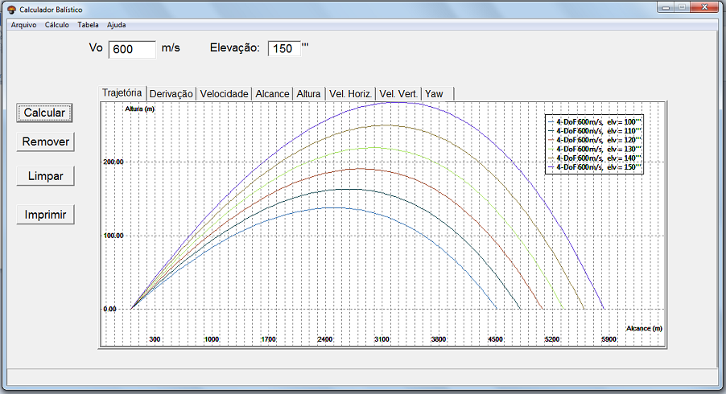
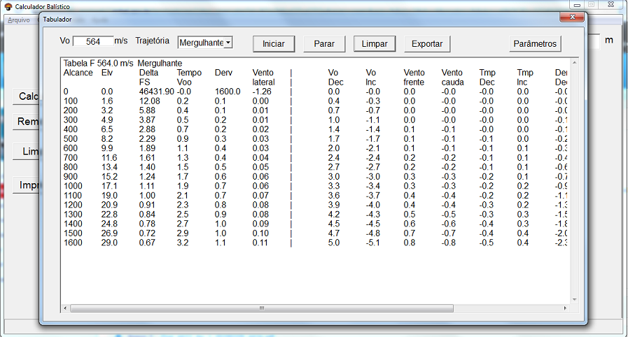
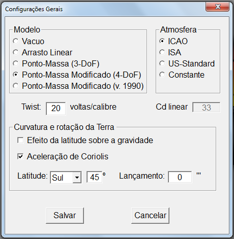
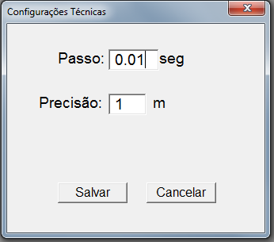
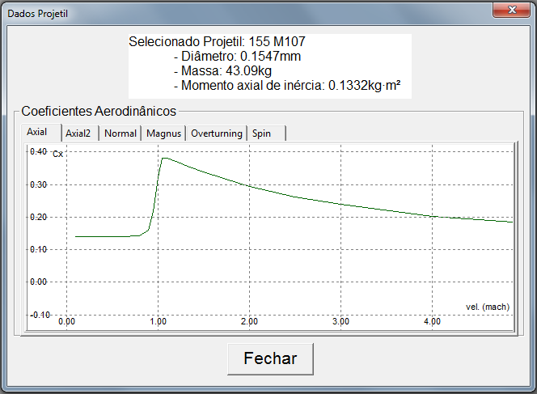

1. Apresentação
Este software se destina a visualização gráfica da trajetória de projetis. Ele implementa as STANAGs 4355 e 4119 para projetis não guiados e giroscopicamente estabilizados, além de outros modelos balísticos mais simples. Possui propósitos de estudo, pesquisa e adestramento, sendo ofertado "como está" e sem garantias. Não use para tiro real!
2. Recursos
Este programa realiza três formas de cálculos balísticos:
Cálculo Direto: feitas as configurações e dada uma elevação, determina-se qual o alcance de um disparo feito com ela. Sempre traça uma trajetória, exceto para elevações maiores que 1.300''' usando-se o 4-DoF, quando esse modelo colapsa;
Cálculo Reverso: feitas as configurações, dados o alcance desejado, o desnível do alvo e o tipo de trajetória (mergulhante ou vertical), retorna-se a elevação necessária para bater o tiro. O cálculo falha para alcances exagerados, desníveis além do possível e, no caso do 4-DoF, elevações muito grandes (> 1.300''');
Alcance Máximo: para uma dada velocidade inicial, varre as elevações nas proximidades de 800'' em busca da que oferecer o maior alcance, desenhando os gráficos da que for determinada.

Não importando qual modo de cálculo esteja ativo, são disponibilizadas as seguintes funcionalidades em botões postos em primeiro plano:
Calcular: executa o cálculo de trajetória (direto ou reverso) e o exibe diversos gráficos distintos, um por ficha;
Remover: retira o último conjunto de gráficos traçado;
Limpar: apaga todos os gráficos traçados;
Imprimir: remete para impressão os gráficos cuja ficha estiver selecionada. Os detalhes da impressão são deixados a cargo do usuário.
Todos esses cálculos são utilizados para a elaboração de Tabelas numéricas de Tiro (TNT). No menu "Tabelas", encontram-se disponíveis os seguintes tipos de TNT:
A - Linhas do Boletim Meteorológico: Correlacionam faixas de elevação do tubo (em milésimos) com a linha do Boletim atingida pelo vértice da trajetória;
B - Alcance Complementar: correção em metros correspondente ao efeito causado pelo ângulo complementar de sítio no alcance planar (atenção: isto não é o efeito do ângulo total de sítio). Utilizado para a obtenção do alcance de entrada para as correções meteorológicas;
C - Componentes do vento: decompõe uma dada velocidade de vento (em nós) em suas componentes longitudinal e transversal, para diversos ângulos dele em relação ao norte;
D - Correções de densidade e temperatura do ar: correções adicionadas à temperatura e à densidade balística para compensar a diferença de altitude entre a bateria e o posto meteorológico;
E - Efeito da temperatura do propelente na Vo: correções da velocidade inicial do projetil em função da temperatura do propelente. Resultado a ser usado em conjunto com os fatores de correção da velocidade inicial na tabela F para a obtenção da correção em alcance;
F - Dados Básicos e Fatores de Correção: sua primeira parte contém os elementos mínimos necessários (elevação, derivação, tempo de voo, etc.) para a execução de um tiro sobre um alvo situado no mesmo nível da bateria, indexados pelo alcance para ele. Sua segunda parte trata das correções em alcance para variações unitárias da velocidade ou peso do projetil, bem como para as variações em um ponto percentual na densidade ou temperatura do ar;
G - Dados Complementares: contém os desvios prováveis e outras informações sobre a trajetória: cota máxima, ângulo de queda, velocidade terminal e correções complementares de sítio.
As tabelas são geradas em um quadro de diálogo à parte, tendo por parâmetros comuns a velocidade inicial (em metros por segundo) e o tipo de trajetória (mergulhante ou vertical). Alguns comandos estão disponíveis pelos seguintes botões:
Iniciar: começa o cálculo das linhas da tabela a partir do alcance mínimo (tiro mergulhante) ou máximo (vertical);
Parar: interrompe o cálculo das linhas da tabela onde se estiver;
Limpar: apaga todas as linhas já calculadas;
Exportar: abre um editor de texto externo e nele cola as linhas já calculadas;
Parâmetros: abre um novo quadro de diálogo para a inserção de informações extras necessárias para o cálculo da tabela. Estas variam conforme a tabela calculada:
B: opções para o usuário formatar os dados de saída da tabela;
E: duas amostras de tempetura e seus respectivos efeitos na velocidade inicial. Demais valores são derivados a partir delas;
F: a massa do propelente em quilogramas, uma informação que é necessária para o cálculo da correção para variação unitária do peso do projetil em quadrados (cf. nota 01);
G: os três primeiros parâmetros - os desvios prováveis para elevação, coeficiente balístico e velocidade inicial - são utilizados no cálculo do desvio provável em alcance. O último é um fator de ajuste para a fórmula do desvio provável em direção, a ser determinado experimentalmente para cada carga (cf. nota 02).

Vale ressaltar que, antes de se proceder a qualquer cálculo, deve-se realizar a devida configuração do programa.
3. Configurações

Dois tipos de configurações são abarcados neste software: as gerais e as técnicas.
2.1 Gerais
Englobam as informações de natureza física necessárias para a execução do cálculo balístico, a saber:
Modelo: o conjunto de fórmulas de que são adotadas para descrever a trajetória do projetil. São disponibilizados os seguintes modelos balísticos:
Vácuo: mais simples, desprezando a resistência do ar e esfericidade do planeta. O tipo de projetil e de atmosfera escolhidos são irrelevantes para o cálculo da trajetória;
Linear: considera que a resistência do ar é proporcional à velocidade do projetil e já leva em conta a esfericidade do planeta;
3-DoF: do inglês Three Degrees of Freedom ("Três Graus de Liberdade"), também conhecido como Ponto-Massa. Trata o projetil como uma partícula pontual e, mais realisticamente, já considera a resistência do ar como proporcional ao quadrado da velocidade. Possui boa precisão para elevações até 600''';
4-DoF: do inglês Four Degrees of Freedom ("Quatro Graus de Liberdade"), também conhecido como Ponto-Massa Modificado. Além das três dimensões espaciais,também trata o posicionamento do eixo principal do projetil com a trajetória (o quarto grau de liberdade). Já apresenta a derivação do projetil e, sem calibração (especificada na STANAG 4144), possui boa precisão para elevações até 600'''.
4-DoF (v.1990): versão alternativa do anterior, publicada pelo Ballistic Reasearch Laboratory (BRL) em memorando de novembro de 1990.
Por padrão, o software inicia com o modelo "4-DoF";
Atmosfera: os modelos para o decaimento da temperatura, pressão e densidade do ar conforme a altitude na troposfera:
ICAO: elaborado pela International Civil Aviation Organization (daí o nome) em 1964 e o mais utilizado para a elaboração de Tabelas Numéricas de Tiro dos materiais mais antigos. Adotado como padrão na inicialização do software;
ISA: a International Standard Atmosphere foi elaborada pela International Organization for Standardization, em 1976, sendo muito utilizada em aplicações não militares;
US-Standard: também conhecido como Army Standard Metro e publicado originalmente em 1958, este modelo foi muito utilizado até o advento da ICAO;
Constante: mantém os valores em nível do solo da atmosfera ICAO para temperatura, densidade e pressão ao longo de toda a trajetória não importando qual a altitude. Útil para tiros planos (elevações < 90''') ou estudo;
Twist: a taxa de torção do raiamento do tubo. Utilizado no modelo 4-DoF, tendo por valores típicos 18, 20 e 25 voltas/calibre;
Cd Linear: o modelo balístico de arrasto linear foi calibrado para o tiro a velocidade inicial (Vo) de 302 m/s para o projetil 105mm (alc 3.500m) e 311 m/s para o 155mm (alc 5.000m). Para outros valores de velocidade inicial, foi disponibilizado este campo para a inserção de um coeficiente de arrasto (drag coefficient) "linearizado", a fim de permitir ao usuário a calibração para outros pares Vo/alcance. Para uma mesma Vo, é esperada uma imprecisão de 5 a 10% para os alcances mais afastados da calibração.
Curvatura e Rotação da Terra: pequenos ajustes a serem feitos nos cálculo, que se tornam significativos em longas distâncias:
Efeito da latitude sobre a gravidade: devido ao fato de o planeta não ser uma esfera perfeita, porém um pouco mais largo no Equador que nos polos, a força gravitacional é ligeiramente mais forte no primeiro e mais fraca nos últimos. Foi estabelecida uma gravidade padrão a 45º de latitude e um fator de correção é aplicado aos disparos feitos sobre os demais paralelos, em todos os modelos balísticos;
Aceleração de Coriolis: em razão de o planeta girar em torno de seu eixo, além de o projetil se afastar dele durante sua trajetória, surgem "forças virtuais" que aceleram ou retardam o projetil - dependendo do ângulo lançamento do disparo -, bem como o desviam lateralmente. Aplicada em todos os modelos, exceto o "Vácuo".
2.2 Técnicas

São parâmetros matemáticos utilizados para resolver as equações balísticas:
Passo: intervalo de tempo utilizado na integração numérica, utilizado em todos os modelo balísticos, exceto o "Vácuo";
Precisão: utilizado no "Cálculo Reverso" como critério de parada, i.e., quando a diferença entre o alcance desejado e calculado é menor que a precisão, a rotina de cálculo se encerra.
4. Projetis

Dois projetis são oferecidos:
- Pjt 105mm M1;
- Pjt 155mm M107.
Seus coeficientes aerodinâmicos foram obtidos do Software Spinner 73 e são exibidos graficamente por ocasião da seleção de cada tipo. Por padrão, o software inicia com o Pjt 105mm M1.
Notas
(1) Alguns valores para pesos de propelentes fornecidos por fabricante nacional são:
| Projetil |
Carga |
Peso Total (kg) |
| 105mm M1 |
1 |
0,248 |
| 2 |
0,288 |
| 3 |
0,338 |
| 4 |
0,423 |
| 5 |
0,573 |
| 6 |
0,823 |
| 7 |
1,230 |
| 155mm M107 |
1G |
3,60 |
| 2G |
4,48 |
| 3G |
5,64 |
| 4G |
7,32 |
| 5G |
9,96 |
| 3W |
1,950 |
| 4W |
2,568 |
| 5W |
3,450 |
| 6W |
4,610 |
| 7W |
6,203 |
Agradecimentos à equipe de engenharia da Fábrica de Juiz de Fora pelas informações.
(2) Por padrão, o programa apresenta os seguintes valores para os desvios prováveis usados no cálculo do desvio provável em alcance:
- Elevação: 0,3''';
- Arrasto: 0,65%
- Velocidade inicial: 0.92 m/s
Para o desvio provável em direção, usou-se, como fator de correção adimensional, o valor inicial de 0,52.